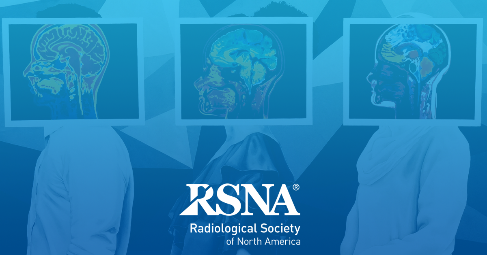
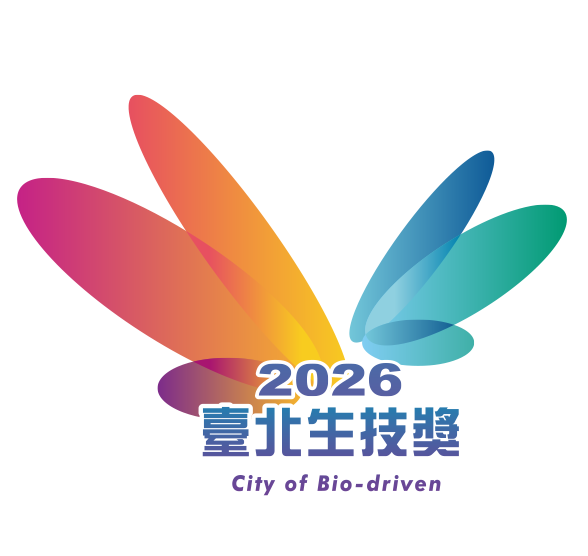
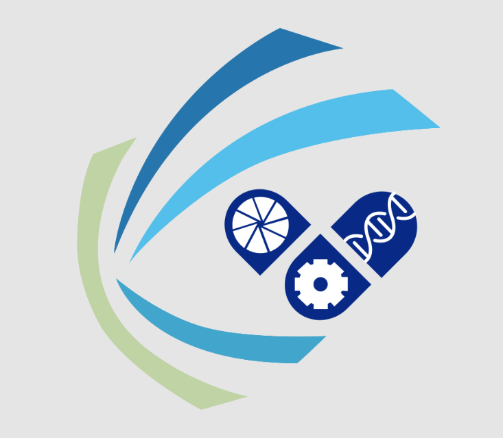
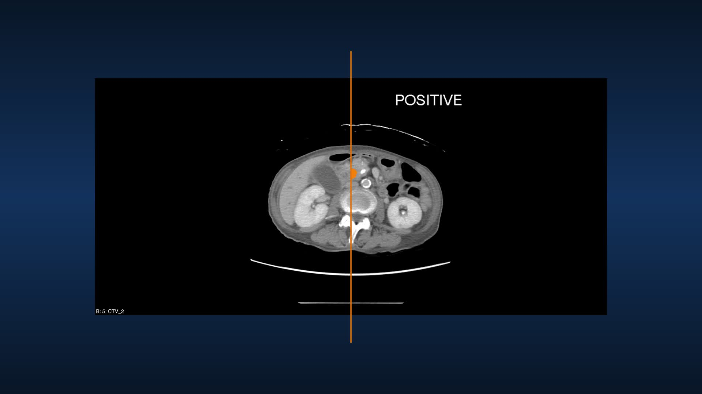

信任
國際認可的證據力
每一項認證，都是讓早期發現成為常態的承諾。



SNQ國家品質標章銀獎


台美 10 件發明專利 · 5 篇國際頂尖期刊 · 9 項國內外大獎
全球首創全自動化胰臟癌 CT AI 輔助偵測系統——在每一次掃描中，主動攔截 <2cm 的早期病灶，為病患爭取黃金治療期。
胰臟癌是最沉默的癌症——當症狀出現時，多半已錯失治療時機。
<2cm 早期病灶在 CT 上被肉眼漏診的機率
若在 <2cm 時發現並治療，五年存活率可達
來自真實臨床場域的驗證數字——不是實驗室承諾，而是已發生的結果。
<2cm 早期腫瘤敏感度
全國 1,473 例真實世界研究 AUC
AI 揪回放射科醫師漏診病例
累積臨床輔助判讀人次
左側是放射科醫師看到的原始影像；右側是 PANCREASaver 在數分鐘內完成的判讀——病灶被橘色警示框精準鎖定。

這些案例來自實際臨床運行——AI 發現了醫師第一眼沒看到的病灶。
腹部 CT 檢查時，放射科醫師肉眼未見明顯腫瘤；PANCREASaver 判定陽性，標示 1.8cm 早期病灶，手術確診為胰臟癌並成功切除。
內視鏡超音波與活檢均為偽陰性；PANCREASaver 精準定位 1cm 病灶，手術證實為胰臟癌。
通過 TFDA 取證、通過 FDA 突破性醫材認定，已在醫學中心、區域醫院與健檢中心實際運行。
臨床輔助判讀人次
每一項認證，都是讓早期發現成為常態的承諾。



台美 10 件發明專利 · 5 篇國際頂尖期刊 · 9 項國內外大獎
無論您是患者、醫療機構或健檢中心，這裡都有屬於您的答案。